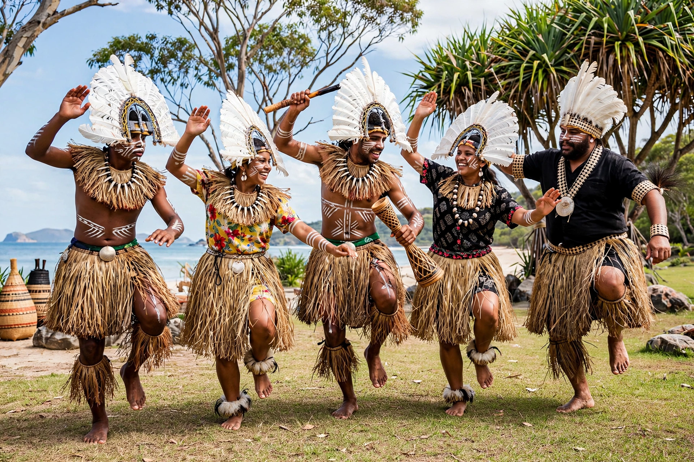

| Torres Strait Islanders | |
|---|---|
| Total population | Over 80,000 (Australia, incl. mainland diaspora) |
| Regions | Torres Strait Islands, Queensland; Bamaga; mainland cities |
| Languages | Torres Strait Creole, Kalaw Lagaw Ya, Meriam Mir, English |
| Religion | Predominantly Christianity; traditional beliefs |
| Related groups | Aboriginal Australians, Papuan peoples, Melanesians |
Torres Strait Islanders are the Indigenous peoples of the Torres Strait Islands, a group of islands in the strait separating Cape York Peninsula in Queensland, Australia, from the island of New Guinea. They are culturally and genetically distinct from Aboriginal Australians, being of Melanesian origin, though Australian law and policy group both peoples together as Indigenous Australians.
Islander society was traditionally organised around seafaring, gardening, trade and elaborate ritual. The islands are grouped culturally into five clusters: the Top Western, Western, Central, Eastern and Inner islands. The eastern islanders speak Meriam Mir, a Papuan language, while the western and central islanders speak Kalaw Lagaw Ya, an Australian language with Papuan influences; Torres Strait Creole (Yumplatok) is now the common lingua franca.
Distinctive cultural symbols include the dhari (feathered headdress), now central to the Torres Strait flag, pearl-shell ornaments, drums and dances that re-enact voyages, warfare and everyday life. The Torres Strait flag, adopted in 1992, features a white dhari and a five-pointed star on green, blue and black panels.
The islands have been inhabited for thousands of years, with close trading and kinship ties to the peoples of southern New Guinea. European contact intensified in the nineteenth century with the bêche-de-mer and pearl-shell industries; in 1871 London Missionary Society evangelists arrived at Erub (Darnley Island), an event still celebrated annually as "The Coming of the Light". Queensland annexed the islands in the 1870s.
Islanders were subjected to protection-era controls but, unlike many mainland communities, largely retained their land and marine tenure. In 1936 Islander pearling workers mounted one of Australia's first organised Indigenous strikes. During the Second World War some 880 Islanders served in the Torres Strait Light Infantry Battalion — the only all-Indigenous unit raised by Australia.
In 1982 Eddie Mabo and fellow Meriam plaintiffs began the case that culminated in the High Court's 1992 Mabo decision, which rejected the doctrine of terra nullius and recognised native title in Australian law. Islanders have since secured native title determinations over most of their islands and, in a landmark 2013 judgment, commercial fishing rights in their sea country.
Roughly 4,500 Islanders live on the islands themselves; the large majority now live on the Australian mainland, especially in Townsville, Cairns, Brisbane and other Queensland centres, while maintaining strong ties to their home islands.